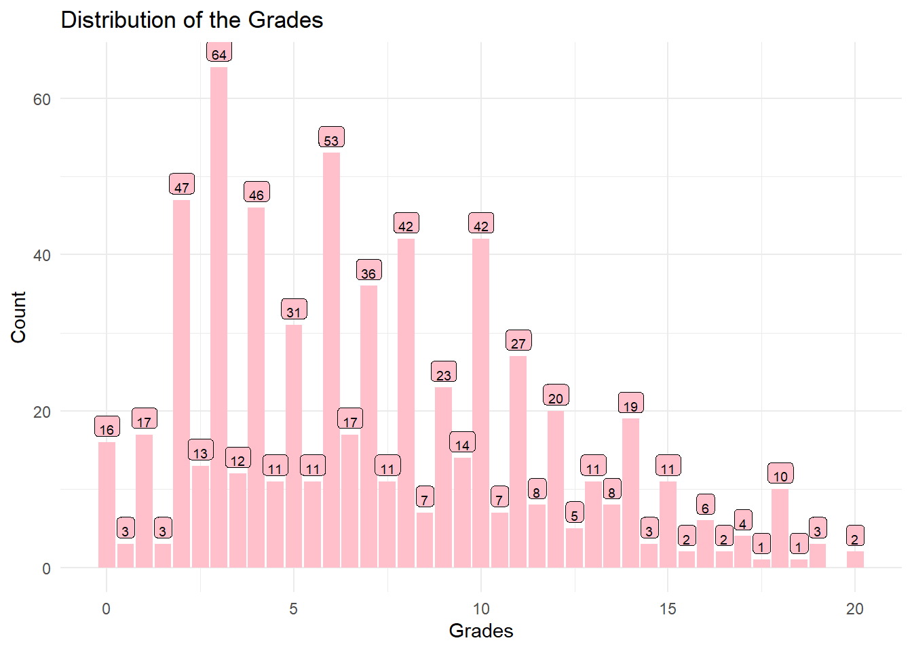
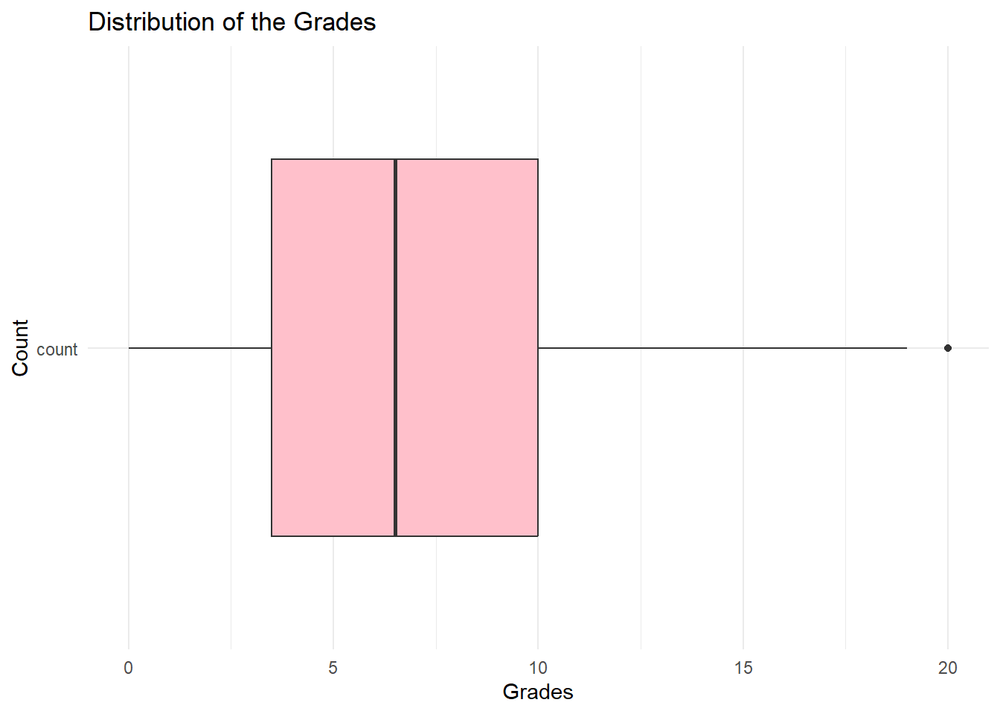
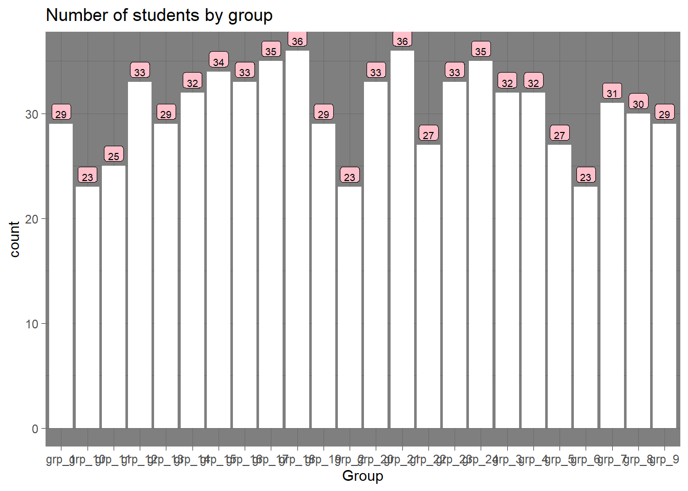
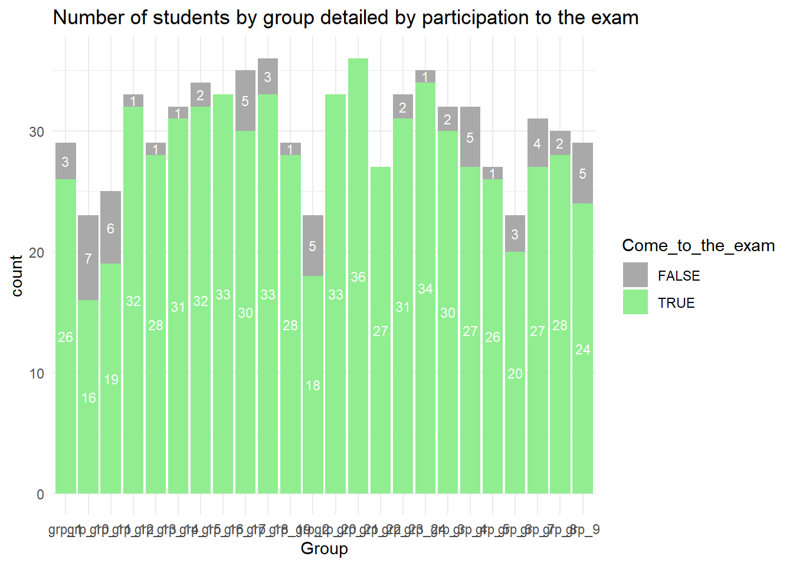
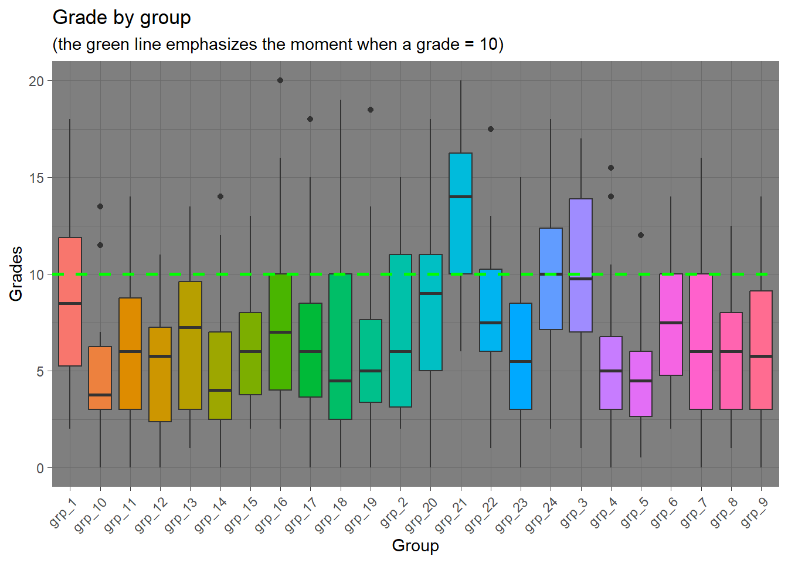
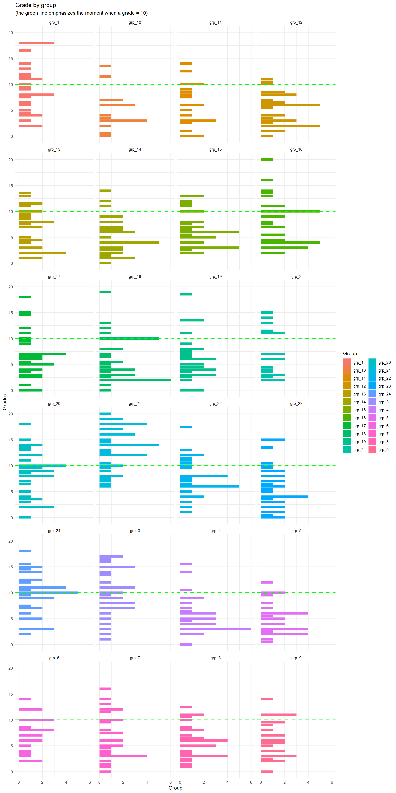
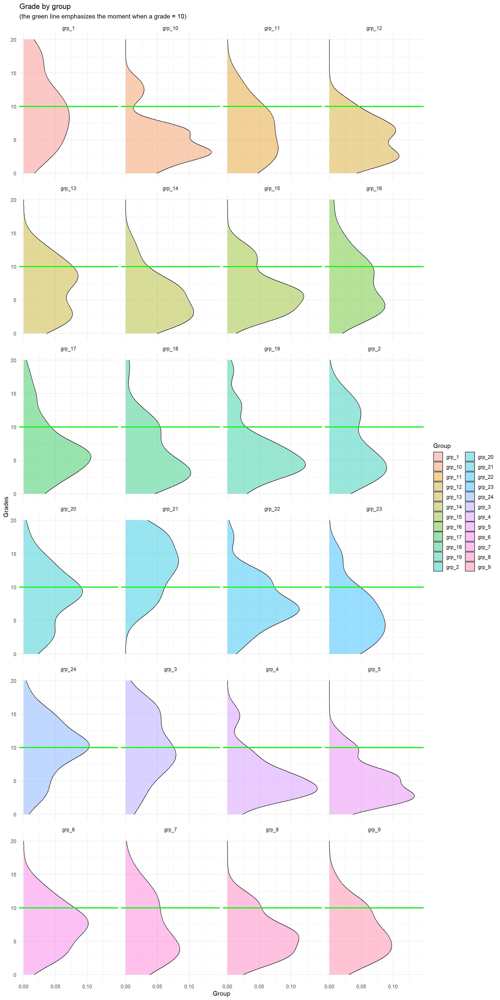
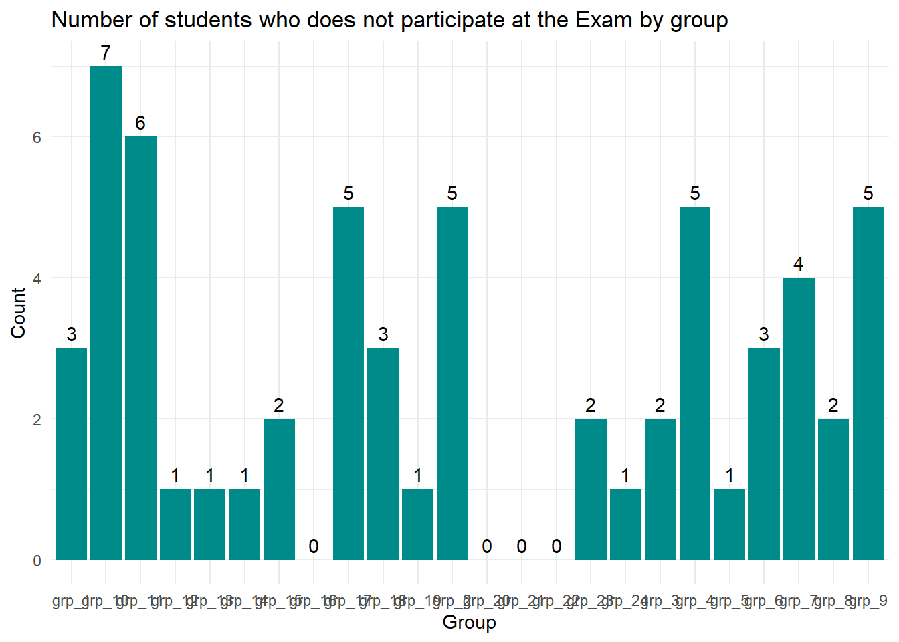

| Min | Median | Max | Mean | Standard Deviation |
|---|---|---|---|---|
| 0 | 6.5 | 20 | 7.15 | 4.38 |
Lab of the 24th
Dplyr-Lab (Lab of the 24th)
Exercise 1
Question 1
Question 2
Complementary data - Coefficient of variation = 61.27387 %Question 3
60 students do not come at the examQuestion 4


Question 5
| Group | Total_count | Student who comes to the exam | % of Student whp comes |
|---|---|---|---|
| grp_18 | 36 | 33 | 91.67 |
| grp_21 | 36 | 36 | 100.00 |
| grp_17 | 35 | 30 | 85.71 |
| grp_24 | 35 | 34 | 97.14 |
| grp_15 | 34 | 32 | 94.12 |
| grp_12 | 33 | 32 | 96.97 |
| grp_16 | 33 | 33 | 100.00 |
| grp_20 | 33 | 33 | 100.00 |
| grp_23 | 33 | 31 | 93.94 |
| grp_14 | 32 | 31 | 96.88 |
| grp_3 | 32 | 30 | 93.75 |
| grp_4 | 32 | 27 | 84.38 |
| grp_7 | 31 | 27 | 87.10 |
| grp_8 | 30 | 28 | 93.33 |
| grp_1 | 29 | 26 | 89.66 |
| grp_13 | 29 | 28 | 96.55 |
| grp_19 | 29 | 28 | 96.55 |
| grp_9 | 29 | 24 | 82.76 |
| grp_22 | 27 | 27 | 100.00 |
| grp_5 | 27 | 26 | 96.30 |
| grp_11 | 25 | 19 | 76.00 |
| grp_10 | 23 | 16 | 69.57 |
| grp_2 | 23 | 18 | 78.26 |
| grp_6 | 23 | 20 | 86.96 |
Question 6


Question 7


Grade is a discrete value so the following result is more than imperfect but I find easely to read the previous facet with geom_density

Question 8
| Group | Missed Exam |
|---|---|
| grp_10 | 7 |
| grp_11 | 6 |
| grp_17 | 5 |
| grp_2 | 5 |
| grp_4 | 5 |
| grp_9 | 5 |
| grp_7 | 4 |
| grp_1 | 3 |
| grp_18 | 3 |
| grp_6 | 3 |
| grp_15 | 2 |
| grp_23 | 2 |
| grp_3 | 2 |
| grp_8 | 2 |
| grp_12 | 1 |
| grp_13 | 1 |
| grp_14 | 1 |
| grp_19 | 1 |
| grp_24 | 1 |
| grp_5 | 1 |
| grp_16 | 0 |
| grp_20 | 0 |
| grp_21 | 0 |
| grp_22 | 0 |
Question 9

Question 10
Question 11
For this question, I’m not sure if I’ve understood the expected result. Indeed, I’m uncertain whether you want us to compute the number of all rows with NA for value or only the student where ‘Exam’ = NA
The number of missing grades, when all value = NA is are taking into account, is 7584.
[1] 60The number of missing grande, when only we take into account the value of Exam wich are equal to NA is 60.